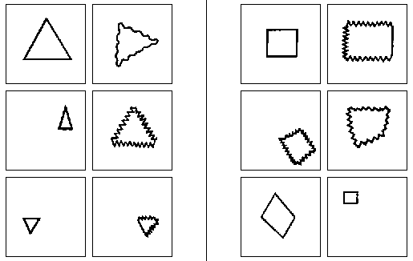
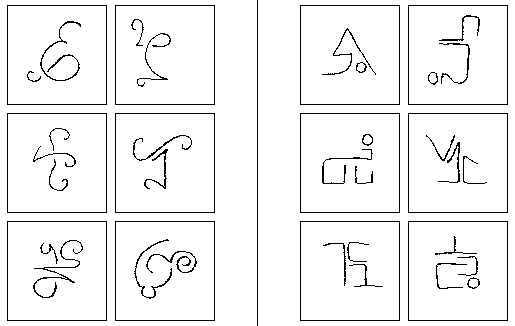
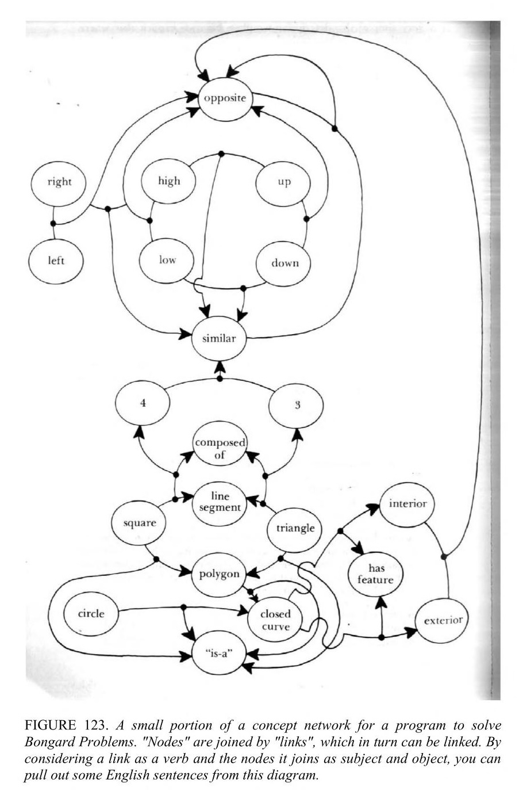
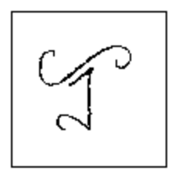
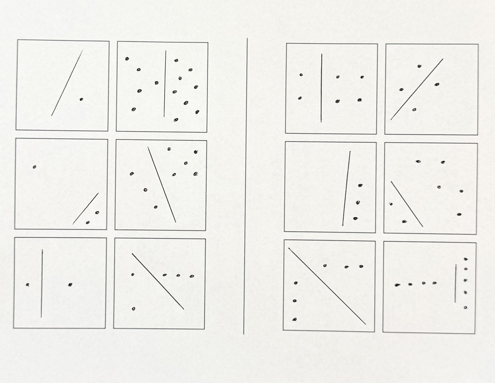

Bongard problems are interesting puzzles; they’re sort of like Spot The Difference meets Raven’s Progressive Matrices. When presented with two sets of images, the challenge is to identify the latent property that is shared by everything on the left but absent (or different) from everything on the right.
Here’s a simple Bongard problem, created by Mikhail Moiseevich Bongard:

And here’s a trickier Bongard problem, created by Douglas Hofstadter:

I first learned about Bongard problems while reading Gödel, Escher, Bach, when Hofstadter introduced them in his chapter Artificial Intelligence: Prospects. I’ve returned to Hofstadter’s puzzles before, but Bongard problems are especially interesting because he used them to imagine, in 1979, what a visual reasoning program might look like:
First, he imagined a preprocessing stage that detects salient features that map to a mini-vocabulary of known concept terms like, line segment, or curve, or horizontal. From there, preprocessing applies its knowledge of elementary shapes to get to terms like, circle, or right angle, or vertex. There’s a resemblance here to what we now call representation learning. In image classifiers built as convolutional networks, the network learns internal representations useful for discriminating images, though as distributed numerical representations rather than as tidy vocabulary of named concepts. And CLIP is an especially interesting modern comparison because it learns image and text representations in a shared space, allowing natural-language descriptions to refer to learned visual concepts.
At this point in Hofstadter’s imaginary program, the picture is “understood” at the basic level of mapping input images to labels. The next stage is a search for high-level descriptions about the features. The program “looks around” to spot descriptors like to the right of, or perpendicular to, or evenly spaced. It can also build descriptions of descriptions, looking for regularities across the ways individual images have been described. There’s a resemblance here to modern work on relational reasoning, where models try to represent not only the objects in an image but also the relationships among them.
But simply generating more descriptions doesn’t solve a Bongard problem. The program also has to decide where to focus and which kinds of properties to filter for. A description can be perfectly true and still be useless for distinguishing the two sides. The right abstraction may only become visible after comparing several images, changing what seems important, and returning to an earlier description with a different idea of what to look for.
Hofstadter suggested various approaches and heuristics for making that search less brittle. He imagined templates and sameness-detectors that could trigger when several examples began to converge on the same description. There’s a loose modern parallel in some approaches to meta-learning, where models learn a space in which examples can be classified by their distance from a common prototype. He also suggested a semantic net in which “all the known nouns, adjectives, etc., are linked in ways which indicate their interrelations.” That sounds a lot like word embeddings.

Importantly, Hofstadter didn’t want early concepts or hypotheses to be rigid. An idea that didn’t quite fit might be weakened, modified, or allowed to slip toward a related concept rather than simply discarded. A shape might be treated as a rough instance of something it doesn’t satisfy exactly, or a group of objects might become a single higher-level object once the problem suggests looking at it that way. There’s a connection here to analogical reasoning, where representations of relationships need to be flexible enough to map across different situations. More broadly, Hofstadter’s program depends on representations remaining tentative enough that higher-level hypotheses can change how the underlying images are described.
The chapter continues to dig into more layers of what this Bongard problem-solving program might require, and how it maps to various forms of recognition, grouping, filtering, and focusing. It’s not the only place in GEB where Hofstadter’s ideas map strangely well onto modern AI, but here he keeps circling two important assertions:
These fascinating problems are intended for pattern-recognizers, whether human or machine.
and
the skill of solving Bongard problems lies very close to the core of “pure” intelligence, if there is such a thing.
One of the most common dismissals of modern AI is that these systems are “only” statistical pattern matchers, with pattern recognition placed on one side of a line and genuine reasoning or intelligence on the other. That distinction remains very much alive in arguments over what today’s “reasoning” models are actually doing. But Hofstadter was describing pattern recognition while simultaneously placing it near the core of intelligence.
Hofstadter was clear about what he meant by a “pattern-recognizer.” His pattern-recognizer has to decide what in an image matters, describe relationships among its parts, compare examples, discard true but irrelevant observations, form tentative hypotheses, and sometimes revise the concepts it is using when they don’t quite fit. Eventually it has to find a pattern that isn’t contained in any one image, but exists across the collection.
Taken this way, “pattern matching” doesn’t tell us very much about whether a machine is intelligent. It describes a family of computations whose limits depend on what kinds of patterns can be found, how abstract those patterns can become, and whether they can be recognized in situations unlike the ones that came before. By the time you assemble everything his Bongard problem-solving program is supposed to do, it becomes surprisingly difficult to say where pattern recognition ends and reasoning begins. Researchers are still using Bongard problems to probe this boundary.
Today’s frontier models are not perfect at solving Bongard problems (neither are humans), but they’re also capable of finding unintended solutions.
I gave BP 155 (above) to GPT-5.6 Sol (High), and it quickly offered a solution:
The rule is right angles.
- Left: none of the figures contains two straight line segments meeting at 90°.
- Right: every figure contains at least one right angle, usually an L-, T-, or rectangular corner.
The curls, loops, circles, and overall “curvy vs. angular” appearance are mostly distraction. The first figure on the right is the sneakiest: the little inward notch beneath the triangular part contains the right angle.
This, of course, is not Hofstadter’s intended solution, but it appears to be a valid solution nonetheless. One is global and quantitative, the other local and categorical. The examples in the problem don’t distinguish between them.
I also gave the problem to Claude Fable 5 (Max), and it produced two incorrect answers:
Every left panel could be traced without ever producing a straight edge or an angle, and every right panel contains at least one ruler-straight stroke. The small circles attached to some of the right figures don’t break the rule, since what separates the sides is whether the figure contains any straight, angular strokes, and none of the left ones do.
There is a second regularity that happens to hold as well, in case it’s the intended one for this particular puzzle: each right panel consists of two separate pieces of ink (a main glyph plus a detached dot or second mark), while each left figure is a single connected doodle, even where its strokes cross themselves. The curved-versus-angular reading is the more visually fundamental of the two, so that’s my answer.
Both of Fable’s answers are plainly false. There are clear angles among the left set, and the left set contains counterexamples with disconnected strokes. In Hofstadter’s terms, the error is at the preprocessing stage; its descriptions of the images contain features that simply aren’t there. His architecture invites top-down pressure on those descriptions, since restructuring and slippage depend on it. But that makes it important to keep checking revised descriptions against the image itself, or a bad early description can turn into fabricated evidence.

I expected both models to regurgitate a “known” answer from pretraining, and it was interesting that neither did. But I still wanted a test I could be certain hadn’t appeared in their training data, so I made a brand new Bongard problem by hand:

Can you solve it?
GPT-5.6 Sol (High) spun for about three and a half minutes and found the solution. Claude Fable 5 (Max) worked for about fifteen minutes and also got it right.
Sol picked up that the lines suggest a geometric rule, but ultimately that the relevant description is numerical. A solver has to count the dots on either side, compare those counts across the examples, and notice the relation shared by the left set. That looks a lot like the process Hofstadter was describing. It has to generate possible descriptions, decide which information matters, and revise the representation until the distinction becomes visible.
Both models solved my new problem, but I don’t think that settles whether Sol or Fable is reasoning. Nor do their earlier results rule it out. Fable’s answer to BP155 builds a coherent argument on a visual description that is simply false. Sol’s answer was unexpected, but may not be an error at all. Neither outcome tells us that reasoning was absent.
Still, “only a pattern matcher” starts to feel like a weak dismissal. In my problem, recognizing the pattern required choosing what to attend to, moving from geometry to number, comparing examples as a set, and finding a relation in a problem the models had never seen. If all of that falls under pattern matching, then the phrase leaves open much of what we care about when we ask whether a system is intelligent.
Since publishing this, my problem has been accepted into the On-Line Encyclopedia of Bongard Problems as BP1293. The entry includes the solution, so spoilers ahead.
If you want to try more Bongard problems yourself, Harry Foundalis maintains a wonderful Index of Bongard problems, with hundreds collected from Bongard, Hofstadter, Foundalis, and others. There’s also the sprawling On-Line Encyclopedia of Bongard problems.
Bongard problems are a fascinating way to investigate how much abstraction and reasoning can fit inside what we call “pattern recognition,” and how little agreement we have about where those categories begin and end.